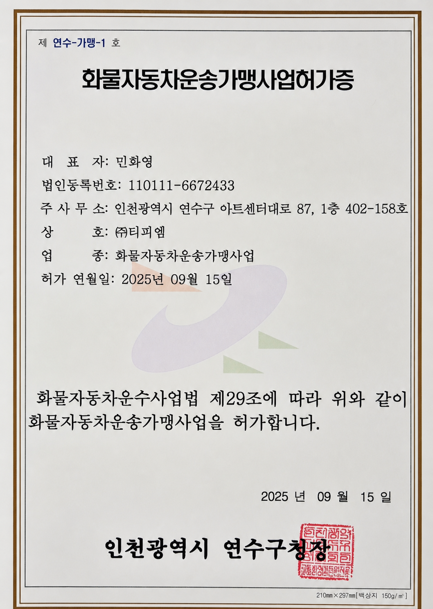

허가 사업의
운영 기반
화물자동차운송가맹사업 허가 취득을 뒷받침한 운송 플랫폼
LICENSED PLATFORMAX-POWERED LOGISTICS PLATFORM
Webtruck과 Webhouse의 현장 경험에 AX 기술을 결합해
화물·컨테이너 운송부터 창고 운영까지 지능적으로 연결합니다.
PROVEN IN THE FIELD
실제 물류 현장에서 축적한 업무 지식이 제품과 AX 전환의 출발점입니다.
화물자동차운송가맹사업 허가 취득을 뒷받침한 운송 플랫폼
LICENSED PLATFORM입고·재고·피킹·출고의 표준화와 실시간 가시성
WAREHOUSE CONTROL부피와 품목 특성을 반영해 개발하고 현재 운영 중인 WMS
LIVE OPERATION업무 지식은 보존하고 기술과 데이터 구조는 미래형으로 전환
CONTINUOUS EVOLUTIONONE LOGISTICS JOURNEY
운송 오더에서 배차·창고·정산·분석까지 끊어진 물류 데이터를 하나의 여정으로 연결합니다.
PRODUCT PORTFOLIO
제품 제목을 클릭하면 대상 업무, 핵심 기능과 AX 기반의 차별점을 자세히 확인할 수 있습니다.
화물 및 컨테이너 오더를 접수하고 차량·기사를 배차해 운행 상태와 운임 정산을 하나의 흐름으로 관리합니다. 화물자동차운송가맹사업 허가 취득을 뒷받침한 TPM Systems의 핵심 운영 플랫폼입니다.
입고, 적치, 재고, 피킹, 검수, 출고 업무를 표준화하고 품목과 로케이션 단위의 재고를 가시화합니다. 운송 시스템과 연계해 창고 안팎의 흐름을 연결합니다.
일반 화물과 컨테이너 운송의 서로 다른 오더·차량·운임 규칙을 한 플랫폼에서 처리합니다. 운영 데이터를 학습 가능한 구조로 전환해 배차 판단과 예외 대응을 지원합니다.
고객·채널·거래처별 주문을 표준 오더로 통합하고 배정부터 진행·예외·완료까지 상태를 추적합니다. TMS와 WMS 사이에서 주문과 실행 데이터를 연결하는 물류 관제 허브입니다.
LICENSED BUSINESS
TPM Systems는 Webtruck을 기반으로 화물자동차운송가맹사업 운영 체계를 구축하고 2025년 9월 15일 사업 허가를 취득했습니다.

허가증 크게 보기 ↗SUCCESS STORY
범용 기능을 강요하지 않고 현장의 업무 흐름을 제품에 반영합니다.
대형·다품목 가구의 입고, 위치, 재고, 출고 흐름을 현장 기준으로 설계했습니다. 개발 이후에도 실제 운영 데이터를 바탕으로 TPM Systems와 함께 기능을 개선합니다.
WHY TPM SYSTEMS
TPM의 물류 운영 지식과 AX 개발 역량이 한 팀으로 제품을 만듭니다.
현재 시스템을 멈추지 않고 우선순위에 따라 단계적으로 현대화합니다.
흩어진 업무 데이터와 규칙을 연결 가능한 구조와 온톨로지로 전환합니다.
반복 업무는 에이전트가 수행하고 중요한 결정은 사람이 승인합니다.